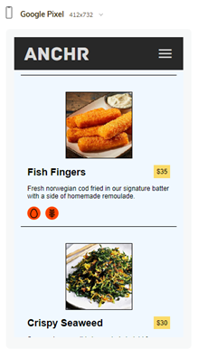
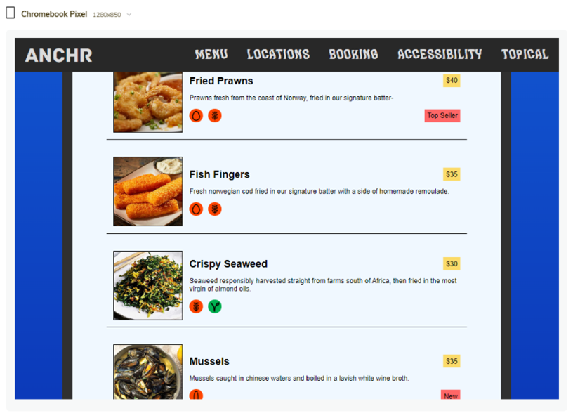

Accessibility
Template/Home/Index Page
Correct use of head, nav, and footer helps navigation for users of assistive devices. Good semantic and visual meaning and structure to the document. Head contains site name and nav. Nav section has links to the other pages. Footer has copyright date and socials.
In html element we have use "en”, so the voice assistance know what language to use. This helps voice assistant users.
We use <ul> because the list does not require an order. Assistive technologies and devices can navigate by and within lists.
In head we have an input with two labels this will be confusing for those that use screen readers, but since we could not use JavaScript, so we chose to do it this way.
In <a> element we don't have links without text which will make it difficult for screen reader users. We can fix this by adding text about the link and then hiding it so that it helps screen reader users. We just could not find out how to hide the text properly.
We also have JavaScript device dependent event handler which can't be used by keyboard users.
Menu Page
Alt text is useful for those who use screen readers, but our img don't have that because this will just give the dish name again.
Good use of headings this provide page navigation for users of assistive technologies. They also facilitate semantic and visual meaning and good structure in the document.
An <object> element is present this causes accessibility issues. We should add HTML alternative so that voice assistant can read it.
Locations Page
Everything has good accessibly only problem is the locations nav, it has no label and uses JavaScript to jump in the page.
Booking Page
None of our input/select have labels screen reader users suffer.
Topical Page
Small text difficult for people with poor vision, it is only image text so they can use zoom function if they really want to read the text.
Choices
 The use of rem and not em so that we can go into the root css and change it if we wanted.
We used lots of media queries so that we can support lots of screen sizes, we may have used it too much. We also use % instead of px or pt so that the page would be responsive. Less absolute units and more relative units. Relative units are scalable units and helps in responsive design
We test on virtual screens as small as Samsung fold to as big 1440p.
Pages
topical.html/css, and accessibility fixes: by group member 252
template.html/style.css, menu.html/css locations.html/css booking.html/css and accessibility.html/css: by group member 271
index.html/home.css, help added dishes and accessibility fixes: by group member 390